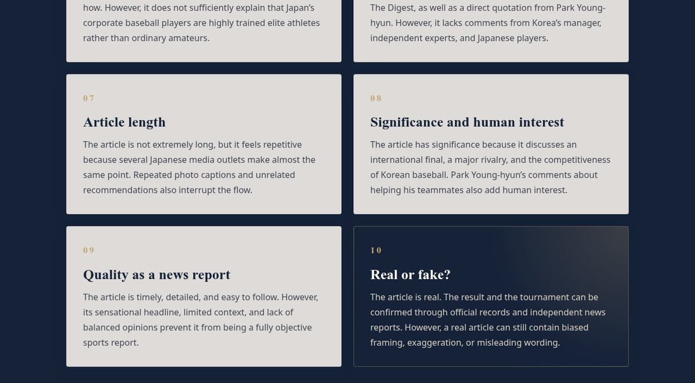
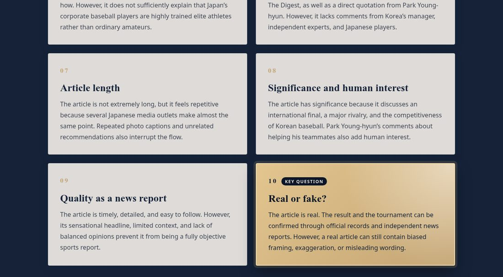

Making “Real or fake?” stand out
“I understand that the “Real or Fake” section has a different color because it is important. However, it blends in with the background, so it doesn't stand out enough. I think using a more eye-catching color would make it better.”
— Chae Young Kim, classmate
The “Real or fake?” card is the most important conclusion of my review, but it used a navy color that was almost the same as the background. I changed it to a bright gold gradient with dark navy text, added a glowing border, and placed a small “Key question” label next to the number.
Now the card is the first thing readers notice in the analysis section.

